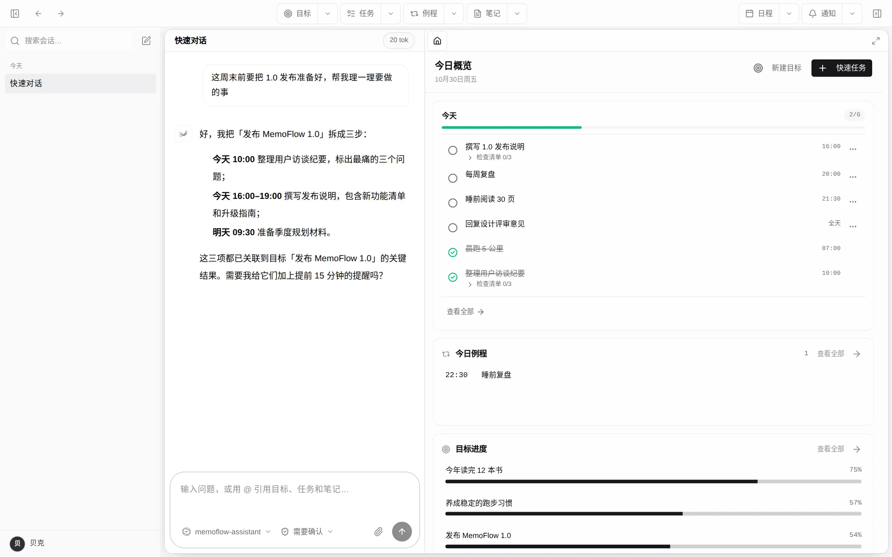
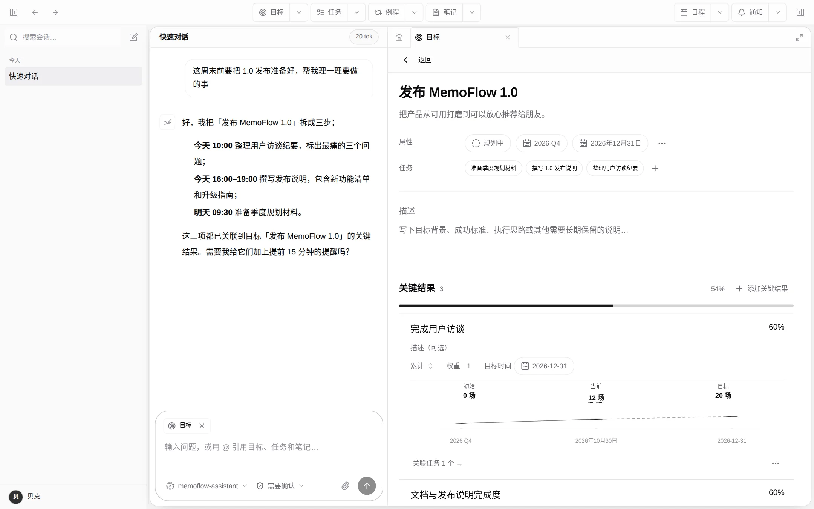
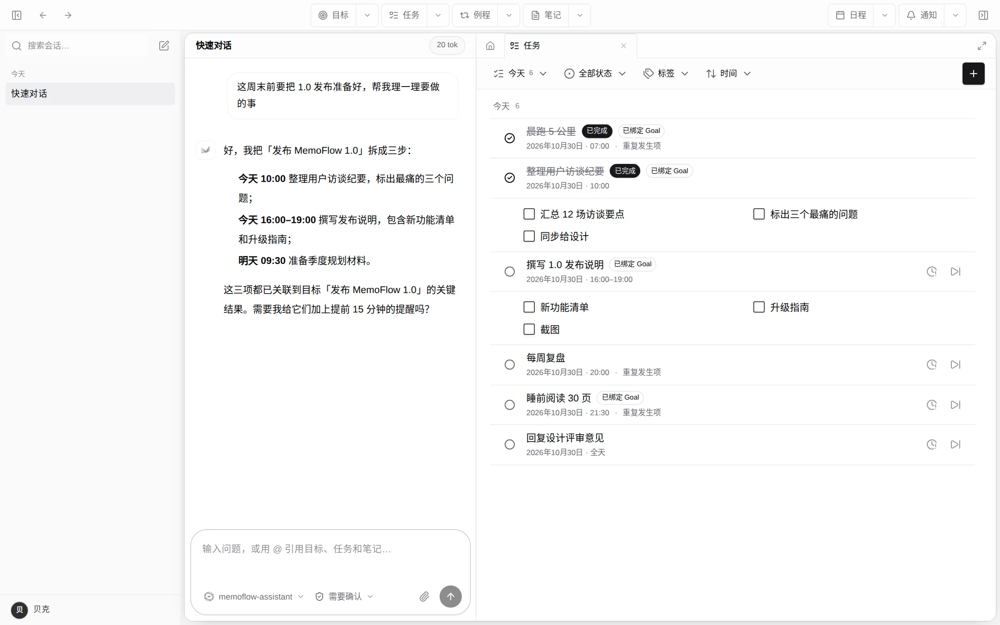
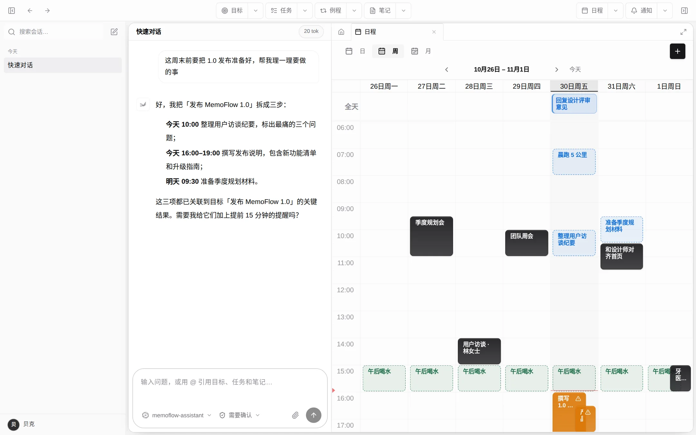
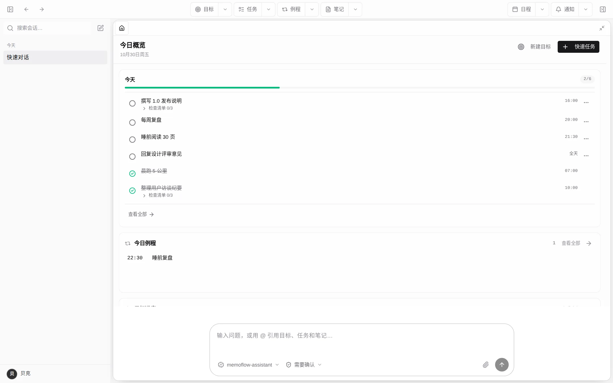

常驻的 AI 对话
长期对话就在工作台旁边。Web 端使用内置助手；桌面端还可以选择本机的 Codex、Claude Code 或 Pi 等智能体。

MemoFlow 把 AI 对话放在你的计划旁边。聊出的决定，直接落到要做事的地方。
AI 对话常驻在工作台一侧，读得到你在 MemoFlow 里的目标、任务和日程。
念头落成带关键结果的目标，和带检查清单的任务，彼此关联。
任务、日程和例程排进同一张周视图，到点提醒。
完成状态、记录和关键结果的进度，都留在它所属的目标里。
下面每张截图都来自当前版本的 Web 端，会跟随你选的主题和语言切换。
对话和你的一天并排放着，聊出的计划，转头就能在时间线上看到。

把目标拆成关键结果：初始值、当前值、目标值。进度是算出来的，不靠感觉。

每个任务都可以带上时间、检查清单，以及它服务的目标。

日程和带时间的任务放进同一张日历，这一周到底有多满，一眼就知道。

该动手的时候，让业务面板占满整个窗口。
截图说明：MemoFlow v0.23.0 Web 端真实界面，用 Playwright 在隔离测试环境的演示账号里截取。AI 回复来自本地模拟模型。
长期对话就在工作台旁边。Web 端使用内置助手；桌面端还可以选择本机的 Codex、Claude Code 或 Pi 等智能体。
每个对话都有权限档位。“需要确认”会在需要权限的操作前逐次询问你。
可度量的关键结果、权重与记录，任务可以绑定到它推动的那条结果上。
时间段、全天和重复规则，每个任务都能有检查清单和重要程度。
日程、定时任务和每天的例程同在一张日历，配上提醒和通知中心。
Vue Web 和 Electron 桌面端共用同一套业务契约，PowerSync 负责跨设备的数据同步。
业务模块各自拥有状态、契约和权限。架构决策有记录，规则由 CI 检查。
当前仓库锁定的技术栈：